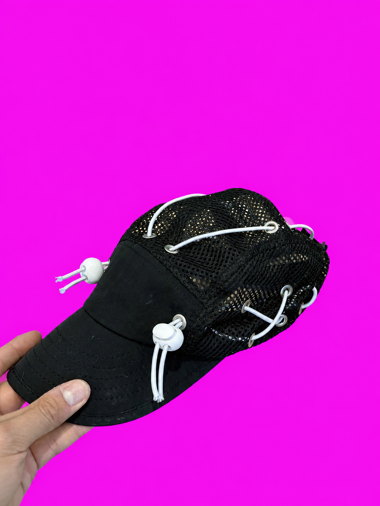
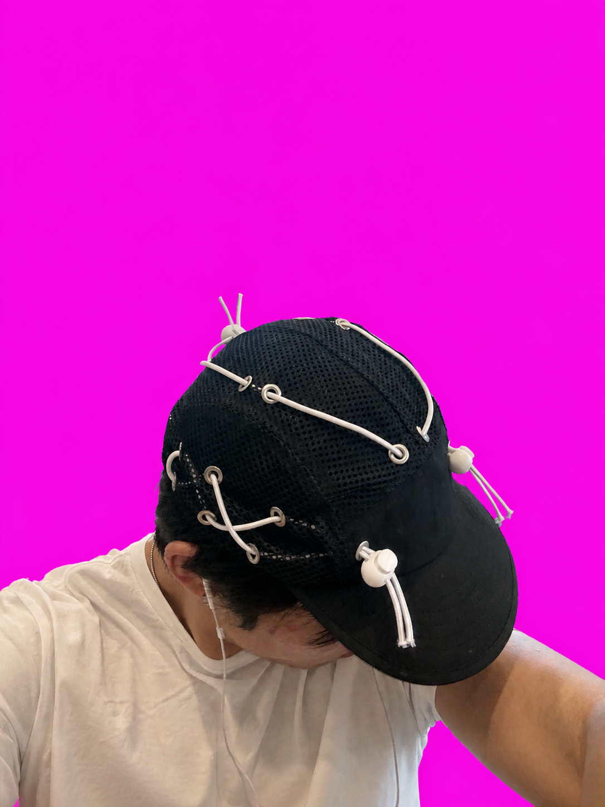

Tom Oh — selected tennis work


UCLA / FAST · 2026


LA · SEP 17
Make real samples with Mike. Learn brand direction by doing.
UNIVERSAL TENNIS
Jerry hits with strangers to make friends and explore cities—already Brazil, Italy, Switzerland. Philippines next; then Rio and Japan.



RAW PROTOTYPE / 3 PHOTO CUTOUTS